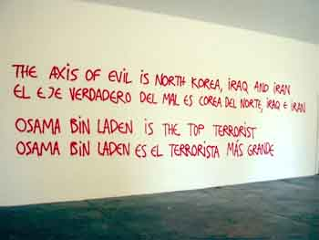

|
|
|
BNA - VSA - USA - EEUU
This work is based on statements that are often heard in discussions and in the press in Europe and America; it speaks about the different ways Europeans and Americans may think about these international issues. The work is intentionally provocative, and my hope is to encourage discussion about these themes. Since Texas ist the home state og President Bush, I thougt it would have particularly strong resonance to make this work here. Although the statements do not necessarily reflect my own opinion, I take full personal responsibility for the work.
Hlynur Hallsson
The views expressed by Chinaty Foundation´s artist in residence Hlynur Hallsson do not necessarily represent the views of the museum´s board of directors and staff. While the museum does not always share the opinions of its artist in residence, it does encourage and support their free creative and intellectual expession, and is host to artist working in a variety of media and methods that can include social and politicaly motivated work.
|
The artist will be available at the Locker Plant to answer questions and speak about his work at the following times:
Friday, 23 August at 7PM, Saturday, 24 August at 2PM, Sunday, 25 August at 2PM, Thursday, 29 August at 6PM
Board of Directors:
Brooke Alexander New York City, Douglas Baxter New York City, Andrew Cogan New York City, Timothy Crowley Marfa, Maxine Frankel Detroit, Rudi Fuchs Amsterdam, Fredericka Hubter Houston, Tommy Lee Jones San Saba, William B. Jordan Dallas, Sissy Kempner Houston, Michael Klein Houston, Edmund P. Pillsbury Fort Worth, Sir Nicholas Serota London, Marianne Stockebrand Marfa.
Honorary Directors:
Franz Meyer Zürich, Annalee Newman (1909-2000), Brydon Smith Ottawa.
|
New York Times “Hoping to Inspire Talk, Artist Ignites Debate” By JIM YARDLEY:
Hlynur Hallsson arrived this summer in Marfa, Tex., with plans, as he put it, to stimulate discussion.
The first exhibit Mr. Hallsson assembled ” a compilation of other artists' work “ did not stir much reaction. His second, four graffiti-style sentences scrawled on a wall, created an uproar.
"The real axis of evil are Israel, USA and the UK," Mr. Hallsson, an artist from Iceland, wrote in English and Spanish. "Ariel Sharon is the top terrorist. George W. Bush is an idiot. And Iceland is banana republic number one."
The exhibit, in a converted slaughterhouse in the heart of the West Texas town, inspired angry letters to the newspaper, scores of enraged telephone calls to local officials and a warning that read, "Iceslander go home!!!" The controversy has raised questions about free speech while increasing local friction between the artists and yuppies known as New Marfans and the established, more conservative citizenry.
"I guess `upset' would be a mild way of putting it," said Mayor Oscar Martinez, describing callers who complained. Of the exhibit, Mayor Martinez said, "We see better graffiti on the railroad freight trains as they go by."
In a remote but beautiful stretch of Texas about 175 miles southwest of Midland ? where President Bush grew up ? Marfa, with roughly 2,500 people, has undergone a gradual but radical transition since the minimalist sculptor Donald Judd began buying buildings there in the 1970's.
The town, once famous as where the movie "Giant" was filmed, is now an established stop in the art world. Mr. Judd died in 1994, but his Chinati Foundation, named after a nearby mountain range, now draw roughly 10,000 visitors a year and sponsors artists in residence.
Mr. Hallsson, 33, a self-described conceptual artist, earned a Chinati grant after a career in Iceland and other parts of Europe, where he once placed a hot tub on a street in Germany and invited pedestrians to take a dip. He arrived in Marfa early last month. Though he already had his "axis of evil" exhibit in mind, the foundation did not know of his plans.
|
He said the first three statements did not reflect his opinions but were taken from comments he had heard in Europe or had seen in the European press. He said the fourth, about Iceland, came from a quotation in an article in The New York Times about plans to build a huge power plant in his home country.
Mr. Hallsson said that he realized the statements were provocative, but that he hoped they would lead to discussion about how the rest of the world sometimes views the United States. The exhibit's opening, on Aug. 22, was attended by a small gathering of local artists whose response was mostly positive. Outside, pedestrians and drivers peered through the large picture windows and the glass doors. As Mr. Hallsson quickly learned, they were outraged.
"People in Marfa got really upset," he said in a telephone interview. "And also that I wrote `George W. Bush is an idiot.' That is something that you say every day here. But I was a foreigner. To write that on a wall was too much."
Mayor Martinez said his office telephone began ringing the next day. His home phone rang over the weekend. The Big Bend Sentinel, the local weekly, provided extensive coverage, including long, furious letters. Some people thought the exhibit was particularly inappropriate coming so close to Sept. 11 and feared it would embarrass the town as tourists arrived for the annual Labor Day weekend festival.
By Aug. 26, Mr. Martinez had called the Chinati director, Marianne Stockebrand, and asked her to cover the windows of the museum. She consulted with Mr. Hallsson and complied, a move that some local artists have criticized as censorship. "Since the artist had given a green light," Ms. Stockebrand said, "we didn't feel it was censorship."
|
Mr. Hallsson said he first resisted the covering but relented unhappily because he did not want to damage the Chinati Foundation. He then proposed a second part of the exhibit, which was unveiled on Aug. 28.
"The Axis of Evil is North Korea, Iraq and Iran," he wrote this time, painting over the original statements. "Osama bin Laden is the top terrorist. George W. Bush is a good leader. And Iceland is not a banana republic."
He said of the change, "I just wrote what people want to read."
But Mr. Hallsson said he thought the more palatable message might still lead to discussion of the issues and hoped that the second opening would draw a crowd. Instead, he said he got apologies from the smattering of artists on hand, while few townsfolk showed up.
Mayor Martinez said few locals went because they considered the change patronizing; moreover, they regard the Chinati Foundation as an aloof and often arrogant neighbor.
"People think that maybe the mentality of the Chinati Foundation is that they build walls between themselves and the community," he said.
Ms. Stockebrand noted that the foundation had an annual open house and was not a newcomer, having been in Marfa for more than a decade.
Mr. Hallsson left on Tuesday to return to Iceland. His departure was planned before the controversy, and he said he wished he could have stayed "for further discussion."
He also said he was startled that people were so quick to try to clamp down on controversial speech.
"I think quite many Americans don't have interest in free speech," Mr. Hallsson said. "The majority, I don't know. My experience was, quite many people would be happy to give that one away."
|
 Hlynur Hallsson, BNA - VSA - USA - EEUU Locker Plant Building, Chinati Foundation, Marfa, Texas
Opening Friday 23. August,.2002 at 6PM |
|
 Hlynur Hallsson, BNA - VSA - USA - EEUU (Part Two) Locker Plant Building, Chinati Foundation, Marfa, Texas
“Reopening” Thursday 29. August,.2002 at 6PM |
|